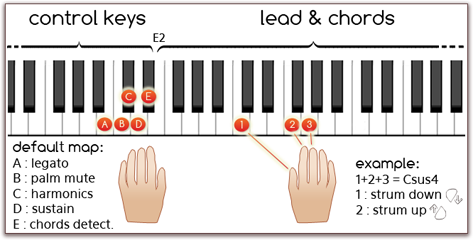
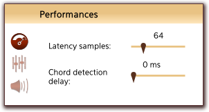
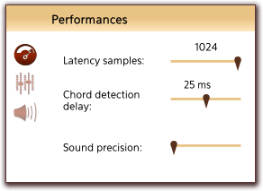

What is it?
Spicy Guitar is a free physically modelled acoustic guitar synthesizer. Relying on an innovative technology,
its sounds are rich, natural and lively.
Main Features
- 9 guitars, 2 types of strings
- physical based sound design
- astonishing expressivity
- easy-to-use strumming engine
- many types of chords, 2 positions
- 5 guitarist playing techniques
- only 10 MB
Features
Sound Synthesis
Spicy Guitar is based on a breakthrough physical modeling sound synthesis technology. Its sounds are natural and rich.
- 9 guitars available: 4 folk, 2 classical, 1 flamenco, 1 jumbo, 1 gypsy
- 2 types of strings: nylon and steel
- Guitarist playing techniques: bend, vibrato, palm muting, harmonics, legato. "On the fly" use.
- Real-time sound design: guitar body and room parameters, string parameters, attack parameters
- Lively sounds: dynamic re-plucking and transitions between notes, no repetition as strings have history
- Few megabytes: downloaded and installed in a minute, no loading time
Playability
Spicy Guitar is built on a simple but powerful playing mode.
Piano chords are automatically detected and converted into guitar chords on the fretboard.
- 2 different positions for each chord
- Chords inversions
- One-hand up and down strumming
- Adjustable strumming speed
- Per-string mode (one MIDI channel per string) for fine control and use with MIDI guitar controller
- Assignable switch keys to trigger controls
- Full MIDI learn

Detected chords
| Major triad | 7 | 7M | 6 |
| Minor triad | m7 | m7M | m6 |
| sus2 | 7 sus2 | sus4 | 7 sus4 |
| dim | 7 b5 | 7 #5 | m7 b5 |
| aug | add 9 | m add9 | 9 |
| m9 | maj 9 | 6, 9 |
Most of the chords can also be played without 3rd or without 5th to trigger special voicings without 3rd or without 5th.
Manual
Feel free to download the manual of the full version of Spicy Guitar.
 Download manual (pdf, English)
Download manual (pdf, English)
Frequently asked questions
Performances and technical issues
The latency is too high - I have too much delay when pressing a key
Two settings of Spicy Guitar can affect the latency, which is the delay between the moment when you hit a key on your MIDI keyboard and the moment when the note can be heard.
- Latency samples controls the number of samples of latency. Set it to a lower value if you have too much latency.
This will increase the CPU consumption though, so you might not want to always keep it to the lowest possible value.
- Chords detection delay controls the duration under which a group of note may result in a chord directly without hearing the individual notes. Set it to a lower value if you have too much latency.
If you are having some difficulties to play crisp and clean chords, you should avoid lowering it too much.
You can access these settings through the Performances tab of the Settings (look for the button at the left of the guitar fretboard):
If these settings do not prove sufficient in reducing the latency, you might want to check you audio setup. See the next question about audio drivers.
Do I need to install some audio drivers?
If you are using a PC, it is recommended to use ASIO drivers. Otherwise, you might experience important latency which is the delay between the moment when you hit a key on your MIDI keyboard and the moment when the note can be heard. If you don't have an external soundcard, or if your soundcard did not come with ASIO drivers, you can try to install and use the ASIO4ALL drivers.
To use ASIO drivers in your host application, see the documentation of your host application. To use ASIO drivers in the standalone version:
- Open the Audio devices tab of the Settings
- Set Audio device to ASIO
- If you want to use ASIO4ALL drivers, set Device to ASIO4ALL. If you want to use the drivers of your sound card, select your sound card in the
Device list on the right.
The CPU consumption is too high - I hear cracks in the sound
You can control the amount of CPU consumed by Spicy Guitar using the following settings:
- Latency samples controls the number of samples of latency and has a direct effect on the CPU load. Set it to a higher value to decrease the CPU consumption.
- Sound precision controls the quality of the sound and also has a direct effect on the CPU load. You can lower the precision to decrease the CPU consumption, but the sound will be of a lesser quality.
You can access these settings through the Performances tab of the Settings (look for the button at the left of the guitar fretboard)
You can also control the amount of CPU consumed using the following physical parameter:
- The type of Room controls the radiation modeling. The larger the currently selected room is, the more CPU power will be needed. Select a small room (like Small 1 or Small 2) to decrase the CPU consumption.
You can access this parameter using the room drop-down menu under the guitar fretboard.
I tried to reduce Spicy Guitar's CPU consumption but I still hear cracks in the sound
If you have already set the number latency samples to the maximum, the sound precision to the minimum, choosen a small room type and still hear cracks in the sound:
- If you are using a laptop, please check that your computer is not running in power saving mode. This can usually be changed by clicking on your battery indicator and choosing the normal or maximum performances setting. This is worth checking as this sometimes gets enabled automatically.
- Check that you do not have any program performing some heavy background processing. This includes anti-virus scans or anything not directly related to audio recording and editing.
Your computer might not be powerful enough to run Spicy Guitar if none of this helps. Please see next question.
Will Spicy Guitar run on my computer?
Spicy Guitar was designed to run on most modern computers - including on modern laptops - and you should not encounter any trouble in most cases. However, because of its innovative synthesis method based on physical modeling, it makes extensive use of CPU processing power.
Software features
How can I use the MIDI learn feature?
The MIDI learn allows you to associate any parameter of Spicy Guitar to a MIDI controller or a key of your choice. You can do MIDI learn on almost anything available in the interface of Spicy Guitar: sliders and knobs, diodes and string type buttons.
Right click on what you want to control, choose Map using MIDI learn among the menu options, and Spicy Guitar will ask you to move a controller.
- On a slider or on a knob: simply move the controller of your choice.
Moving the controller will change the value of the parameter.
- On a diode: simply press the key of your choice on your midi keyboard.
Holding the key will toggle the diode on, and releasing the key will toggle it off.
The chords detection diode behaviour is special. When associated to a key, pressing the key will alternatively toggle the diode on or off. You don't have to hold the key.
The bend and vibrato diodes behaviours are also special. Unlike other diodes, you cannot associate a switch key to control its on/off status directly. In fact, since bend and vibrato are more effects than playing mode, you must use a controller to control the effect (the vibrato frequency or the pitch shift)
How can I use the automation feature to control effects?
To control the harmonics/palm/legato/.. parameters, put the automation curve below 0.5 to toggle off, and over or at 0.5 to toggle on.
About
Spicy Guitar relies on innovative works on sound synthesis and has been created by two music enthusiasts, Pierre-André and Benoît. Most of the efforts have been focused on:
- Physical modelings of finger/string and fret/string interactions
- Coupling between strings, body and frets
- Modal formalism of implicit systems
- Numerical computation of solutions for non-linear differential equations
- Real-time convolution algorithms and recursive systems